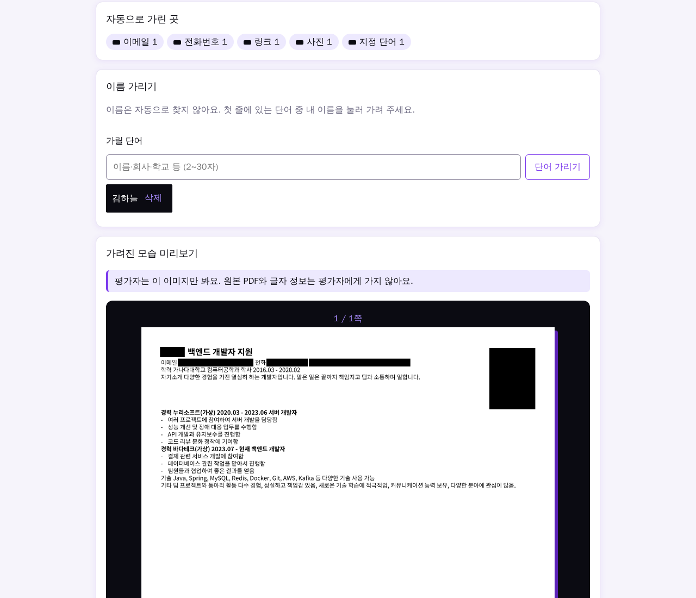
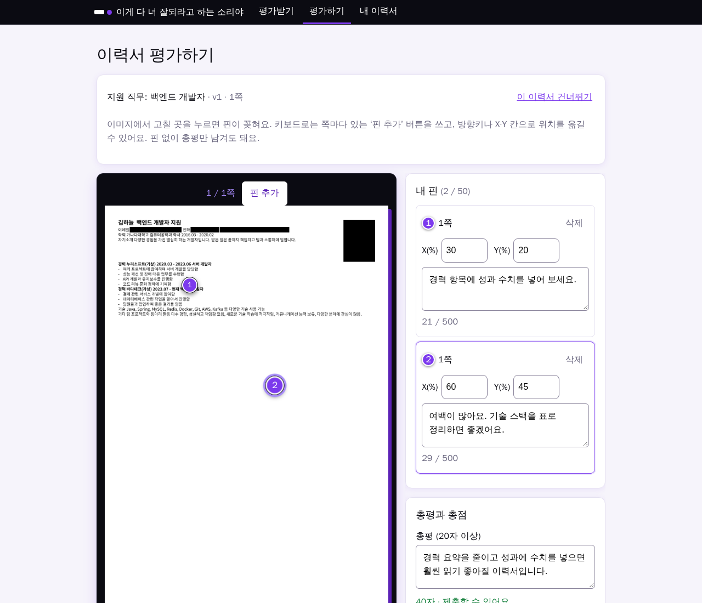
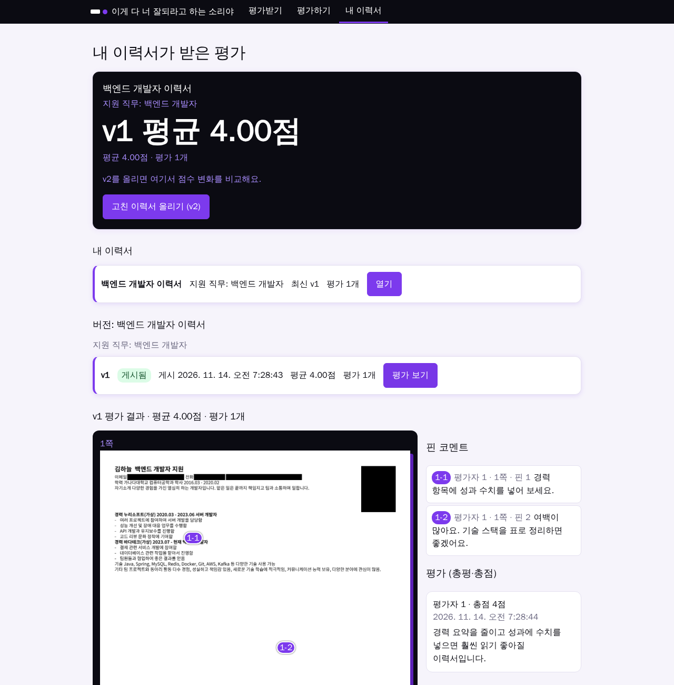
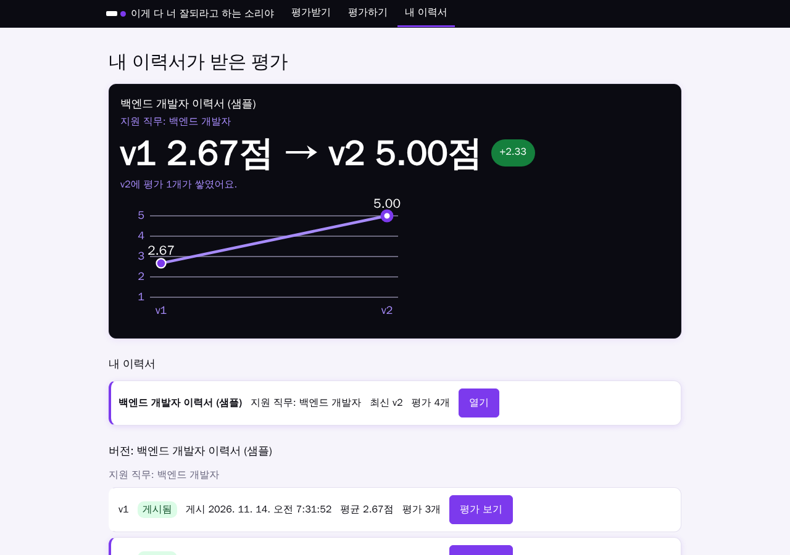

직접 보기

79초 실제 사용 영상 (발표 중 재생)
지금 바로 써 보기
https://host-10-0-0-56.tail21684f.ts.net:8443
영상은 발표자의 실제 이력서로 녹화 (이름·연락처·사진 가림)7 / 10
KIROTHON 2026 · 내 일상에 바로 적용할 수 있는 서비스
이름은 숨기고, 이력서 조언은 더 많이 받는 곳
부탁할 수 있는 사람은 지인 몇 명뿐.
모르는 사람에게 보여 주자니 이름과 연락처가 걸린다.
버전은 8개로 늘었는데, 조언은 카톡과 메모 7곳에 흩어졌다.
어느 버전에 무슨 말을 들었는지 비교할 수 없다.
조언에 목마른데, 받을 곳도 모아 둘 곳도 없었습니다.
제출한 이력서 버전
조언이 흩어진 메모와 대화
버전별 조언을 모아 둔 곳
PDF를 올리면 이름·연락처·사진만 검게 가립니다. 디자인은 그대로.
처음 보는 사람이 고칠 곳을 눌러 한 줄 조언과 점수를 남깁니다.
버전별로 받은 조언이 한 화면에. 점수가 올랐는지 바로 보입니다.

1. 올리면 가려진다
평가자는 이 이미지만 봅니다

2. 고칠 곳을 누른다
번호 핀 + 한 줄 조언 + 점수

3. 내 화면에 모인다
받은 핀이 이력서 위에 겹쳐 보임

v1 2.67점 → v2 5.00점
버전마다 받은 점수와 조언이 한곳에 쌓입니다.
이제 "어느 버전이 나았지?"를 감이 아니라 기록으로 봅니다.
79초 실제 사용 영상 (발표 중 재생)
지금 바로 써 보기
https://host-10-0-0-56.tail21684f.ts.net:8443
노트북 화면이 고장 났는데, 외부 모니터를 깜빡했습니다. 그래서 저는 휴대폰으로 결정만 하고, 만드는 일은 Kiro의 AI 팀에 맡겼습니다.
자동으로 돌린 테스트
동시에 일한 AI
다른 AI의 독립 검사
글자 위를 덮는 게 아니라 그림으로 바꿔 칠합니다. 복사해도 가린 글자가 나오지 않습니다.
평가자는 내가 미리보기로 확인한 이미지만 봅니다. 게시 직전에 한 번 더 확인합니다.
게시하면 원본 PDF는 바로 지웁니다. 게시하지 않은 파일도 24시간 뒤 지웁니다.
이력서를 외부 AI나 외부 서비스로 보내지 않습니다.
이름은 숨기고, 조언은 더 많이.